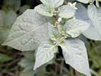

Black nightshade
Solanum nigrum
Other names
blackberry nightshade, garden huckleberry (sometimes incorrectly called deadly nightshade)Description
Annual or or short lived perennial herb reaching up to 3m, but usually 0.3 1m tall. Broadly ovate dark green leaves, up to 10cm long, sometimes shallowly wavy. Flowers have five petals, white with large yellow anthers and in lateral clusters. Berries about 6 10mm diameter, purple black when ripe, green when unripe and contain seeds. Much variation in the plant.
Similar plants
Velvety nightshade looks similar but tends to grow taller and become woody. Leaves are velvety(!) Other nightshades have similar flowers. The edible garden huckleberry (from USA) is a variety of black nightshade.
Distribution
Common in waste places and cultivated land throughout NZ. Spreads to pastures in some districts. Often the first plant to colonise waste ground.
Toxin
The glycoalkaloids solasonine and solamargine. All parts are toxic; alkaloids are concentrated in the berries, particularly unripe berries. Ripe berries are probably not toxic.
Species affected
Generally considered non toxic to animals, although in the UK there appear to be some toxic varieties. Children should be warned to avoid the green berries as they may be poisonous. There are a few reports of suspected poisonings in hungry cattle in NZ, particularly calves.
Clinical signs acute
Vary from gastrointestinal disturbances including diarrhoea and constipation to nervous signs of drowsiness and paralysis. In cattle, staggers, delirium and periodic convulsions have been reported. In NZ, depression and increased respiratory rate were reported in calves. In another incident in Taranaki, one calf was found dead and three were sick (one died later) out of 51. The only clinical sign was increased respiratory rate.
Clinical signs chronic
Post mortem signs
Inflammation of the gastrointestinal tract. Lung congestion, haemorrhage in the auricles, enlarged liver and myocardial degeneration and necrosis have been reported in calves.
Diagnosis
History, clinical signs, leaves/berries in rumen/stomach.
Differential diagnosis
Other Solanum species. Other causes of vomiting/diarrhoea.
Treatment
No specific treatment; symptomatic care. Establish respiration, induce vomiting (when appropriate), activated charcoal, saline cathartic, iv fluids to maintain body fluid and electrolyte balance.
Prognosis
Prognosis poor, usually fatal or severe illness. A long recuperation period can be expected for animals that survive. in a case in Taranaki, 4 of 51 calves were affected: 2 died.
Prevention
Do not allowed hungry livestock to graze areas where plants are growing.
References
Connor, HE, The Poisonous plants in New Zealand, 2nd ed.,1977, Government Printer, Wellington
Parton K, Bruere A.N. and Chambers J.P. Veterinary Clinical Toxicology, 2nd ed. 2001. Veterinary Continuing Education Publication No. 208
Surveillance, 2005, 32 (2): 28
|
|
|
|
 |
|
|
|
||
|
|
|